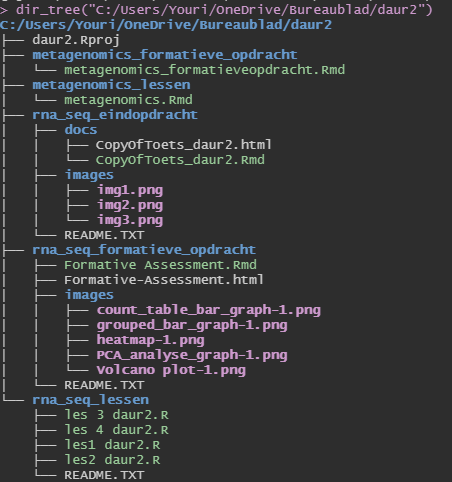

dir_tree("C:/Users/Youri/OneDrive/Bureaublad/daur2")knitr::include_graphics(here("images/directory_tree.png"))

Figure 4: Screenshot of my directory tree
Buecker, Susanne, Kai T. Horstmann, Julia Krasko, Sarah Kritzler, Sophia Terwiel, Till Kaiser, and Maike Luhmann. 2020. “Changes in Daily Loneliness for German Residents During the First Four Weeks of the COVID-19 Pandemic.” Social Science & Medicine 265 (November): 113541. https://doi.org/10.1016/j.socscimed.2020.113541.
Chen, Vincent Chin-Hung, Tsai-Ching Hsu, Li-Jeng Chen, Hong-Chun Chou, Jun-Cheng Weng, and Bor-Show Tzang. 2017. “Effects of Taurine on Resting-State fMRI Activity in Spontaneously Hypertensive Rats.” Edited by Yi-Hsien Hsieh. PLOS ONE 12 (7): e0181122. https://doi.org/10.1371/journal.pone.0181122.
Sumner, Josh, Leah Haynes, Sarah Nathan, Cynthia Hudson-Vitale, and Leslie D. McIntosh. 2020. “Reproducibility and Reporting Practices in COVID-19 Preprint Manuscripts.” Preprint. Health Informatics. https://doi.org/10.1101/2020.03.24.20042796.